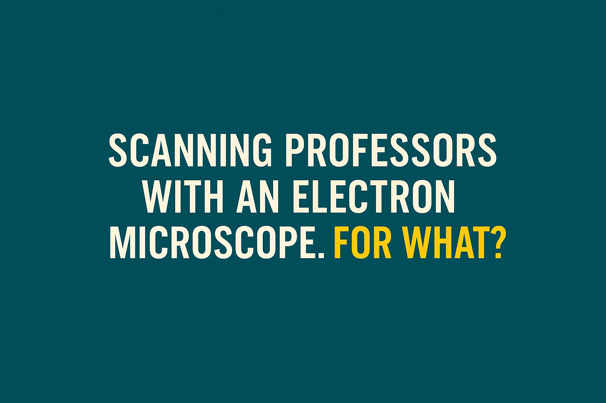

ปัญหาไม่ใช่ตำแหน่งทางวิชาการ แต่คือระบบที่ไม่ไว้วางใจมหาวิทยาลัยและไม่เข้าใจธรรมชาติของวิชาการยุคใหม่
{kind=link}

บทความนี้ตั้งต้นจากคำถามที่ดูเหมือนเล็ก แต่จริง ๆ กินไปถึงโครงสร้างของระบบอุดมศึกษาไทย: เหตุใดตำแหน่งทางวิชาการระดับสูงอย่าง ศาสตราจารย์ จึงไม่ต้องยื่นบัญชีทรัพย์สิน ขณะที่ตำแหน่งบริหารรัฐระดับใกล้เคียงอย่างอธิบดีต้องยื่น และในทางกลับกัน เหตุใดกระบวนการเลื่อนตำแหน่งทางวิชาการของมหาวิทยาลัยจึงถูกสแกนละเอียดอย่างหนักจากส่วนกลาง
แกนวิพากษ์ของโพสต์นี้ไม่ได้อยู่ที่การปฏิเสธการตรวจสอบ แต่ชี้ให้เห็นความย้อนแย้งของระบบที่ดูเหมือน ไม่ไว้ใจมหาวิทยาลัย และไม่เข้าใจธรรมชาติของงานวิชาการยุคใหม่ ทั้งที่มหาวิทยาลัยควรมีอิสระเชิงวิชาการมากกว่าองค์กรอื่นหลายประเภทด้วยซ้ำ
จุดคมที่สุดของบทความนี้คือการเปรียบเทียบว่า องค์การมหาชนซึ่งบริหารงบรัฐและมีผลกระทบวงกว้างกว่า กลับมีอิสระในการแต่งตั้งผู้เชี่ยวชาญหรือผู้ทรงคุณวุฒิได้เองมากกว่า ขณะที่มหาวิทยาลัยซึ่งทำหน้าที่ผลิตความรู้และผลิตคน กลับถูกกำกับด้วยกล้องระดับ “จุลทรรศน์อิเล็กตรอน”
ปัญหาไม่ใช่จะตรวจหรือไม่ตรวจ แต่คือเหตุผลของการตรวจมันไม่สมดุล
ผู้เขียนไม่ได้บอกว่ามหาวิทยาลัยไม่ควรถูกตรวจสอบ ตรงกันข้าม เขายอมรับว่าถ้าไม่ตรวจเลย วันหนึ่งปัญหาก็เกิดแน่ แต่สิ่งที่ถูกตั้งคำถามคือ เหตุผลและระดับความเข้ม ของการกำกับดูแล ว่าทำไมจึงลงน้ำหนักกับมหาวิทยาลัยมากเป็นพิเศษ ทั้งที่ความเสี่ยงและผลกระทบของบางหน่วยงานนอกมหาวิทยาลัยอาจสูงกว่าด้วยซ้ำ
เมื่อวางแบบนี้ บทความจึงไม่ได้เป็นแค่การบ่นเรื่องขั้นตอน แต่เป็นการวิจารณ์ตรรกะของรัฐว่ากำลังกระจายความไว้วางใจอย่างไร และใช้มาตรฐานอะไรกับสถาบันแต่ละแบบ
มหาวิทยาลัยควรมีอิสระเชิงวิชาการมากกว่า แต่ระบบกลับสลับด้านทั้งหมด
หนึ่งในข้อเสนอที่ชัดที่สุดของโพสต์คือ ตามหลักการแล้ว มหาวิทยาลัยควรมี อิสระเชิงวิชาการ มากกว่าองค์การมหาชน เพราะศาสตร์มีพลวัต ความรู้ก้าวหน้าเร็ว มาตรฐานแต่ละสาขาไม่เหมือนกัน และการตัดสินคุณภาพงานวิชาการควรเป็นของผู้เชี่ยวชาญในสถาบันนั้น
แต่ในความเป็นจริง ระบบกลับสลับด้านทั้งหมด: เรื่องเล็กในมหาวิทยาลัยถูกควบคุมอย่างละเอียด ขณะที่เรื่องใหญ่บางประเภทในองค์กรอื่นกลับได้รับอิสระมากกว่า ความย้อนแย้งนี้ทำให้เกิดคำถามใหญ่ต่อบทบาทของรัฐในการถ่วงดุลและการควบคุม
สิ่งที่สะท้อนออกมาคือรัฐไว้ใจองค์การมหาชนมากกว่ามหาวิทยาลัย
ข้อสรุปกลางของบทความนี้แรงและตรงมาก คือระบบปัจจุบันกำลังสะท้อนว่า รัฐไว้ใจองค์การมหาชนมากกว่าไว้ใจมหาวิทยาลัย ทั้งที่มหาวิทยาลัยต้องแข่งขันกับโลกที่เปลี่ยนเร็วที่สุด และควรเป็นพื้นที่ที่มีความยืดหยุ่นสูงในทางวิชาการ
ในมุมนี้ ปัญหาไม่ได้อยู่ที่ “ตำแหน่ง” อย่างเดียว แต่คือโครงสร้างการกำกับที่มองมหาวิทยาลัยผ่านสายตาแบบราชการดั้งเดิม ซึ่งไม่สอดคล้องกับธรรมชาติของ knowledge institution ในยุคใหม่
คำถามปลายทางจึงไม่ใช่แค่เรื่องระเบียบ แต่คือจะวางเส้นแบ่งอำนาจใหม่อย่างไร
ท้ายที่สุด ผู้เขียนชวนกลับมาคิดใหม่ว่าอะไรควรเป็นอำนาจรัฐเพื่อถ่วงดุล และอะไรควรเป็นอำนาจของมหาวิทยาลัย เพื่อให้อุดมศึกษาไทยก้าวทันโลกได้จริง ประเด็นนี้ทำให้บทความก้าวพ้นการระบายความไม่พอใจ ไปสู่คำถามเชิงออกแบบระบบที่ลึกกว่า
ดังนั้น บทความนี้จึงเป็นทั้งคำวิจารณ์และคำชวนคิดว่า ถ้ายังใช้ตรรกะแบบเดิมในการควบคุมมหาวิทยาลัย เราอาจไม่ได้กำลังรักษามาตรฐาน แต่กำลัง ตรึงสถาบันความรู้ไว้กับความไม่ไว้วางใจ ของระบบราชการ